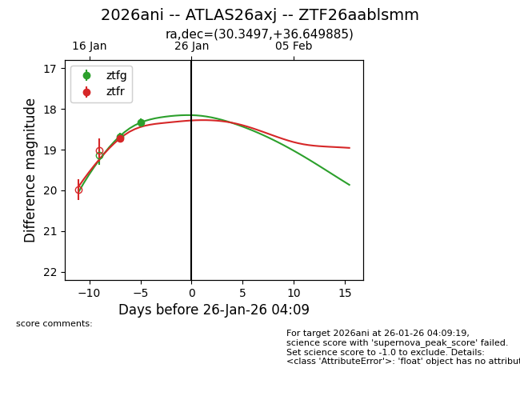
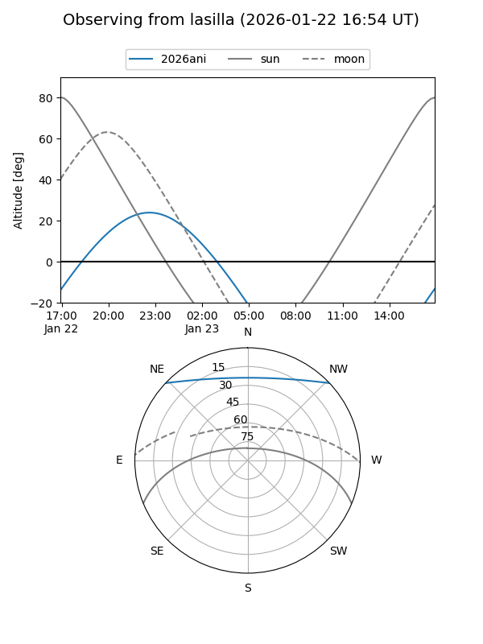
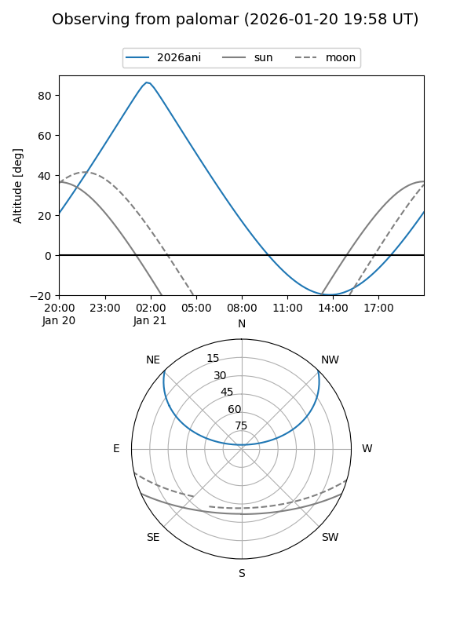
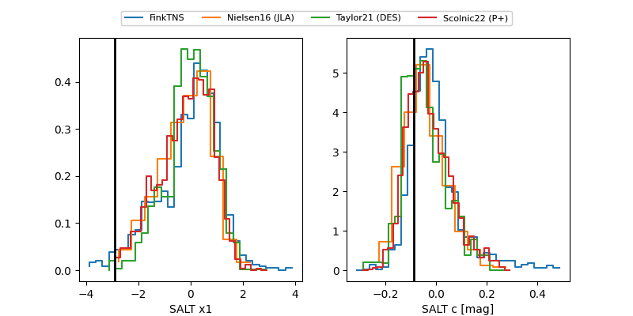

2026ani
Target 2026ani at 2026-01-22 10:21
Aliases and brokers:
FINK: link
Lasair: link
ALeRCE: link
TNS: link
YSE: link
alt names
ZTF26aablsmm (ztf,fink_ztf)
2026ani (tns,yse)
ATLAS26axj (atlas)
Coordinates:
equatorial (ra, dec) = 30.3497,+36.64989
equatorial (HMS+DMS) = 02:01:23.92,+36:38:59.59
galactic (l, b) = (138.2523,-24.13181)
Flags:
Photometry:
last ztfg=18.32, ztfr=18.73
2 ztfg, 1 ztfr detections
Lightcurve

Visibility


Additional plots
